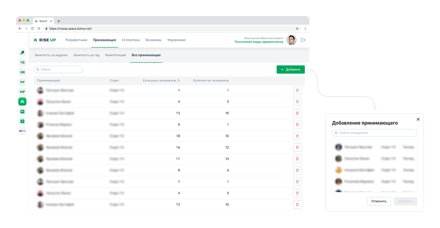
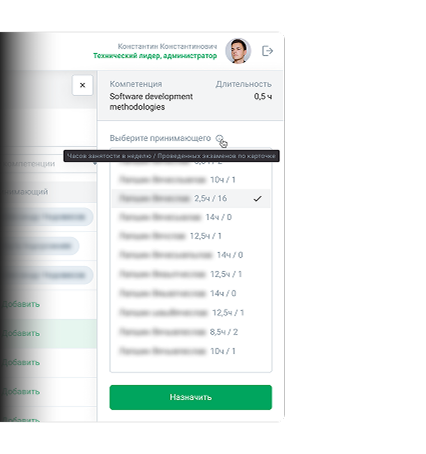
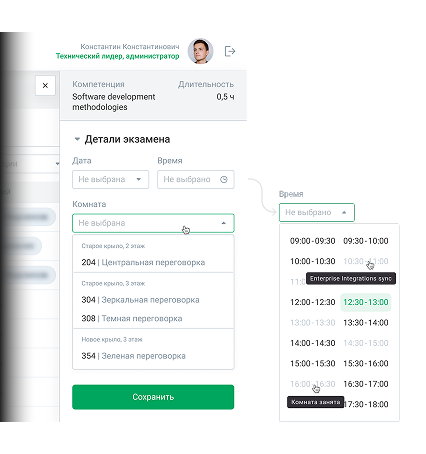
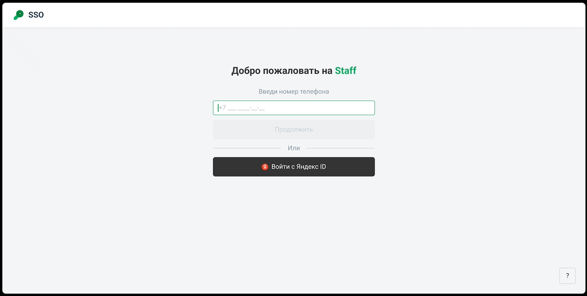

Контекст
Так как проект внутренний, я вживую общался с реальными пользователями. Не было необходимости даже организовать отдельные встречи — общение происходило на кофепоинте, в коридорах, за рабочим местом.
Так собрал список критичных замечаний, которые приходили сразу на ум пользователям. Но предположительно были и неудобства, о которых не вспомнили или привыкли, не думая, что можно получше. Поэтому просил в следующий раз при взаимодействии с инструментом звать меня, чтобы я наблюдал, как они выполняют свои обычные задачи, комментируя вслух.
Основными представителями пользователей стали Никита — администратор системы и Дима — принимающий экзамены.
Что я услышал и увидел
У Никиты уже был список предполагаемых улучшений, которые бы он хотел увидеть:
- Возможность во время записи на экзамен выбора технологии, языка программирования для сдачи.
- Возможность добавлять и удалять из платформы принимающих экзамены.
- Переработка флоу назначения принимающих.
У Димы были замечания к интерфейсу принимающего:
- Интерфейс не персонализирован под роль.
- Флоу выбора времени и места проведения экзамена неудобен.
А вот что я заметил во время наблюдений:
- Непроработанная структура платформы.
- Неясный интерфейсный текст (даже опытные пользователи не были уверены в используемой на экране терминологии).
- Лишние вынужденные шаги, страницы, смысл которых не смог подсказать ни один пользователь.
- Изолированную от контекста статистику, которая могла бы быть очень полезна в нужном контексте.
Визуализация

Редактирование списка принимающих
Раньше администраторам приходилось добавлять принимающих через код, что занимало много времени. Теперь можно добавить принимающего прямо в интерфейсе — выбираешь из списка недавних техлидов.

Назначение принимающего
При выборе принимающего сразу видно, насколько он занят и сколько экзаменов уже принял по нужной компетенции.

Бронирование места
Принимающие жаловались, что место и время выбираются в одном меню — это было неудобно. Разделили на два отдельных меню.

Вход в систему
Самые популярные способы входа (по телефону и через Яндекс ID) вынесены на главный экран, остальные спрятаны под кнопкой «?».
Процесс
Исследование
Провел серию интервью и сессий наблюдения с тремя группами пользователей: техлидами (экзаменаторами), администраторами и сотрудниками. Главные инсайты из бесед:
- Техлиды используют только 10% интерфейса — страницу «Мои экзамены», остальное создает шум.
- Администраторы тратят много времени на рутинные действия, например, добавление принимающих через код.
- Экран входа перегружен, что вызывает ступор у новых пользователей.
Гипотезы
Основываясь на этих наблюдениях, я сформулировал несколько гипотез:
- Если персонализировать интерфейс под конкретную роль, пользователи перестанут тратить время на фильтрацию лишней информации.
- Если заменить программирование на выбор из списка, администраторы будут выполнять задачу быстрее и с меньшим количеством ошибок.
- Если разделить сложные действия на последовательные шаги, количество путаницы снизится.
- Если убрать редко используемые способы входа с главного экрана, процесс входа станет интуитивным.
Проектирование и тестирование
На основе гипотез я спроектировал новую структуру и провел юзабилити-тестирование прототипов на тех же пользователях. Ключевые изменения:
- Персонализация интерфейса под роль. Убрал лишние страницы из версии для принимающих.
- Замена программирования на выбор из списка. Вместо ввода кода администратор теперь выбирает фамилию принимающего из выпадающего списка недавних пользователей.
- Группировка по смыслу. Разделил выбор времени и места бронирования на два последовательных шага, чтобы не перегружать пользователя.
- Перенос статистики в контекст задачи. Убрал абстрактные цифры в отдельный блок, оставив только те данные, которые влияют на принятие решения.
- Упрощение входа. Оставил на главном экране только два самых популярных способа (телефон и Яндекс ID), остальные спрятал под кнопку «Другие способы».
Мой вывод
Живое общение с пользователем даёт глубину, которую не получить из аналитики. Когда ты видишь эмоции человека, слышишь его интонации, понимаешь, что для него действительно важно.